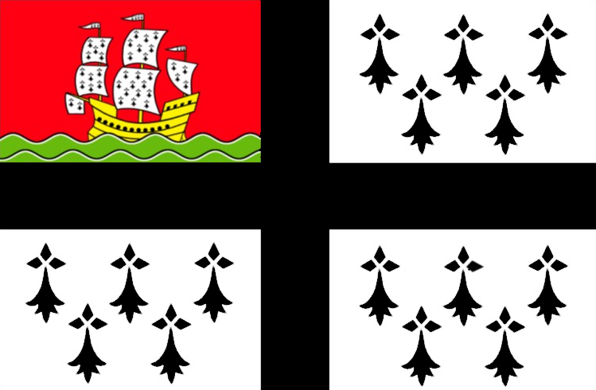
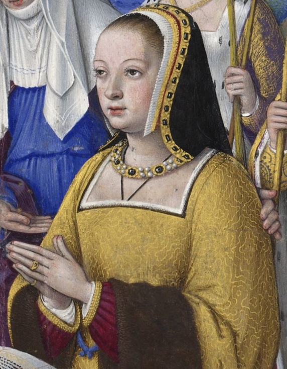
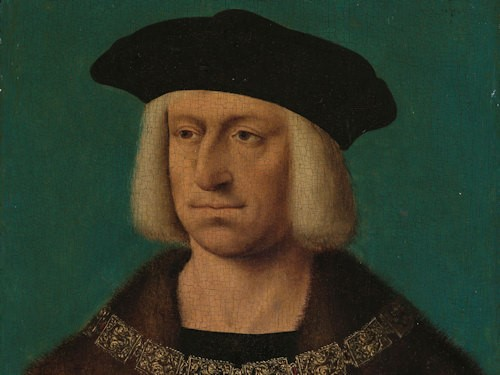
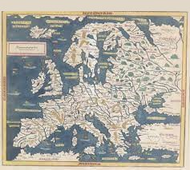
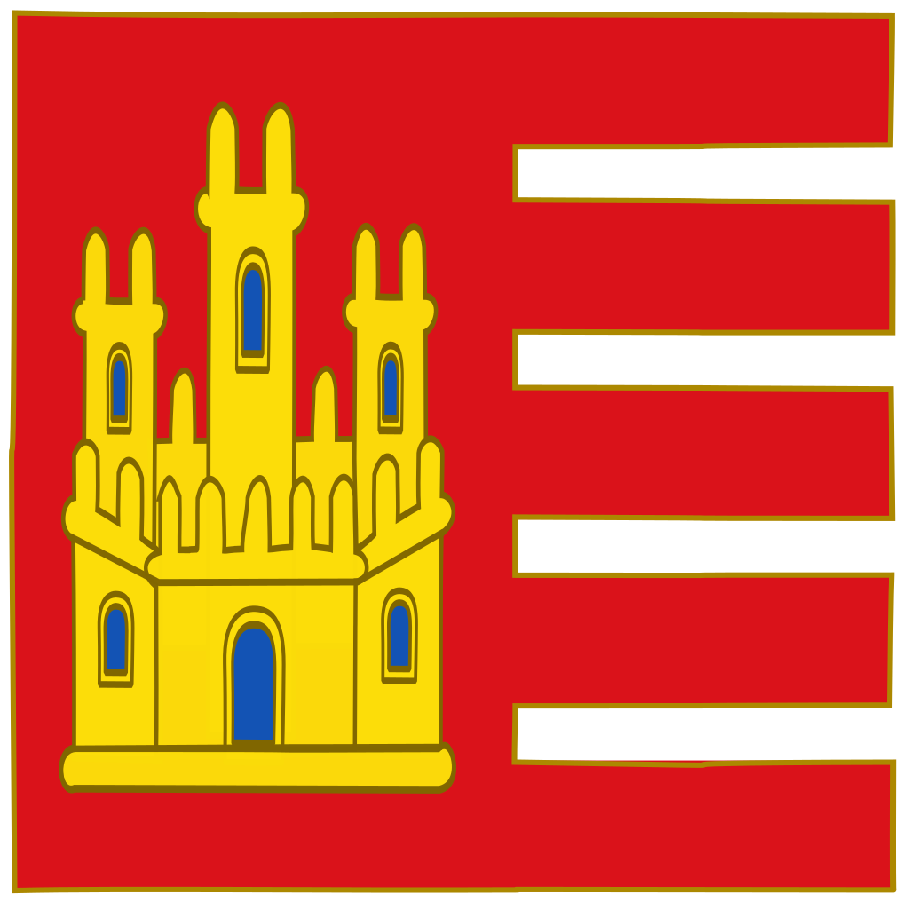
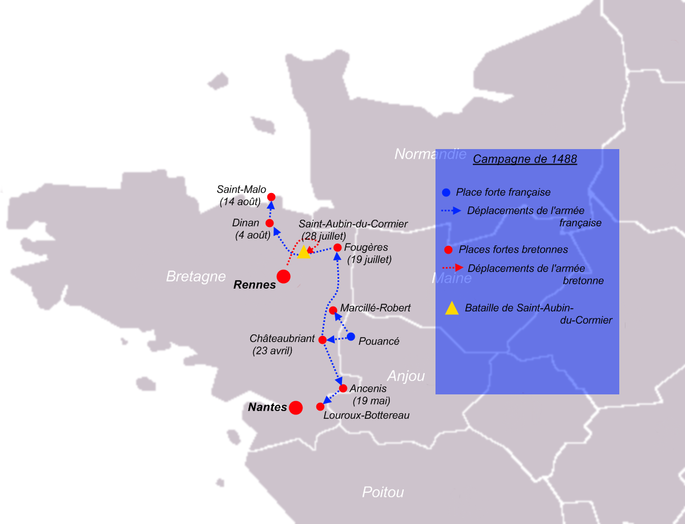

Anne de Bretagne (Anna Breizh), née le 26 Janvier 1477 et morte le 09 Janvier 1514 est sans doute la plus grande duchesse de l'Histoire de la Bretagne. Née à Nantes en Duché de Bretagne et morte dans le Royaume de France, elle a dirigé la Bretagne durant la Guerre de Bretagne ayant fait perdre son indépendance au Duché de Bretagne malgré les nombreux alliés de la Bretagne..
|  |
 |
 |
| Drapeau du Pays de Nantes |
Anne de Bretagne |
Blason |
Le 19 décembre 1490, Anne de Bretagne épouse dans la Cathédrale de Rennes Maximilien Ier par procuration. Anne de Bretagne devient donc à la fois Duchesse de Bretagne, comtesse de Montfort, Impératrice d'Autriche, Impératrice du Saint-Empire Germanique, Reine de Naples, Duchesse de Milan et Reine des Romains. Anne de Bretagne étant également la nièce du roi et de la reine de Castille et d'Aragon, les Rois très catholiques, la Bretagne se fait énormément d'alliés, de l'Espagne à la frontière de l'Empire de Russie. Ce mariage a pour but de faire rentrer la Bretagne dans la grande coalition autrichienne, censée faire tomber le Royaume de France en l'encerclant de tous les fronts, la Belgique, le Luxembourg, le Saint-Empire, Castille, Aragon, Bretagne et l'Angleterre via la manche, avec l'Autriche plus loin en Europe.
|  |
 |
| Maximilien Ier du Saint-Empire |
Europe en 1488. Anne De Bretagne était alliée avec l'Empire Espagnol.  |
Le Roi de France trouve qu'Anne de Bretagne est une menace contre la France, il décide donc d'attaquer la Bretagne et de mettre fin aux fiançailles Brito-Autrichiennes. En 1492, elle épouse malgré elle le Roi de France Charles VIII, déclenchant le processus d'annexion de la Bretagne. Elle épousera enfin pour un 4ème mariage (Le premier étant avec le Prince des Pays de Galles), Louis XII, nouveau roi de France.
|  |
| La Guerre de Bretagne |